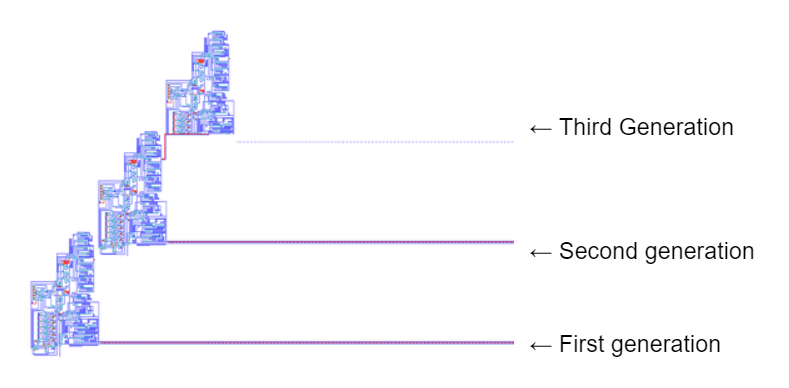
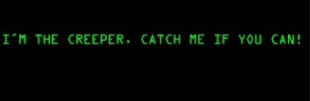
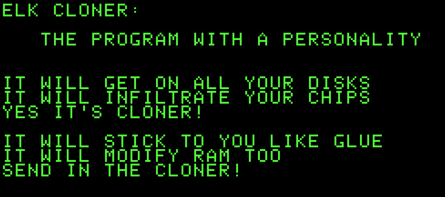

Early academic work on self-replicating programs
1949: The theory of self-replicating computer programs by John von Neumann
The Von Neumann universal constructor is a self-replicating machine. In the 1940s, it was designed by a mathematician, computer scientist, and engineer named John von Neumann.
The details and characteristics of the machine are found in a published book made by John von Neumann called “Theory of Self-Reproducing Automata”. While the book wasn’t as well known as his other work, it was titled as the foundations for automata theory, complex systems and artificial life. His work was considered to be a discipline between the artificial world and the natural world. To understand the characteristics of malwares, we’ll break down and analyze Neumann’s machine.
In 1949, at the University of Illinois, Von Neumann’s goal with the machine was specified in his lectures. It was to be designed to have a complexity similar to biological organisms under natural selection. For the evolution of machines to be possible, a threshold of complexity must be surpassed. The threshold, according to John von Neumann, is that when a machine is run, it should be able to duplicate itself.
In his plan to build this intricate machine, he divides its attributes into three parts. First, the “blueprint” of itself, which are its behaviours and the structure of the machine. Second, a universal constructor mechanism that is able to read any “descriptions” and/or “blueprint” provided and assemble using those encoded instructions. Lastly, a universal copy machine where it is able to replicate any description. The machine's mechanism in simple terms works as follows, the universal constructor activates which constructs a new machine from after it reads the description. Afterwards, the universal copy machine replicates the description read by the constructor, resulting in the copied description being embedded in the new machine. Eventually, it results in a working replication of the original that is able to keep reproducing. Although in some cases, its function goes backwards its intended route which prioritizes the replication of the description first and then builds the machine. Additionally, the machine has a chance to evolve through accumulating mutations of the “blueprint” leading to a more complex machine system.
To provide a more detailed description of his machine, Neumann invented the concept of cellular automaton, which is a discrete model used in computation. The model he used contains a two dimensional grid of cells, each cell is able to be in a state out of 29 at any point in time. The cells would update their states at each timestep which are influenced by the states of the surrounding cells. In the cellular automaton, the universal constructor is a certain pattern of cell states, containing one line of cells that acts as the description. The machine then reads that line of cells, constructs the copy of the machine without the description(line of cells) which essentially becomes a “container”, and places it at another location in the grid. Finally, the machine copies the description and places it into the duplicated machine. The resulting machine is practically identical to the original. The newly made machine would then continue replicating. The process is seen in the provided picture below.
First Examples of malicious computer programs
1971: The “Creeper” virus written by Bob Thomas. Most commonly regarded as the first computer virus.
The Creeper program or Creeper virus was the world's first ever recorded malware. It was an experimental program written by Bob Thomas in 1971.
The purpose of the creeper program was not intended to be a virus. Viruses weren’t conceptualized back in the 1970s, it was an unknown topic. Bob planned to experiment and create a self-replicating program. It wasn’t made for anything malicious. The creeper program was written in PDP-10 assembly mainframe computers. These computers were used for bulk data processing for things such as consumer statistics, resource planning, etc. The computers ran a TENEX operating system (TENEX is a system that saw the first email programs SNDMSG and READMAIL which popularized the usage of @ symbols in email addresses). With the use of ARPANET, the ancestor of the internet we know today, the Creeper program “infects” the PDP-10 computers.
The Creeper’s purpose was to first, initialize a print but would stop abruptly. Afterwards, it would find another TENEX system creating a connection, then it would carry and transfer itself to the other machine, which would then run on the new machine displaying the message “I'M THE CREEPER; CATCH ME IF YOU CAN”. Important thing to note is that the program rarely or never replicates itself at all, rather it jumps from one system to the next. It would always attempt to remove itself from previous systems to move on to the next. Therefore, the Creeper wasn’t multiplying as often as a normal virus, it was mainly just one program wandering around a network.
However, the program didn’t stop there. Ray Tomlinson, colleague of Bob Thomas, updated the program. Not only would it move through the network, it would also guarantee to replicate itself. This version was considered to be the first ever worm malware recorded in history. Apart from the fact that Ray had upgraded the Creeper program, he also made a Reaper program. Similar to the updated Creeper program, it wandered and replicated itself, however, its purpose was to find Creeper programs in the systems which would then force the Creeper to log off. Through that fact, the Reaper was labeled as the first anti-virus software.
As stated above the Creeper program was not at all malicious, so the “damages” the creeper may have caused would most likely be just minor annoyances. Although, some say their creeper program replicated so much, it overpowered other programs. Overall, the extent of the damages made by the program are unspecified. Both authors were not condemned or anything of that sort for creating the program.
1982: “Elk Cloner”— The first computer virus to spread "in the wild"
The Elk Cloner virus is one of the first known computer viruses that spread outside the computer system or laboratory in which it was written. In February 1982, Rich Skrenta, created the Elk Cloner as a prank. At the time, he was a 15-year-old high school student with a precocious ability in programming and an overwhelming interest in computers.
He wrote the boot sector virus for the Apple II computers. In those days, operating systems were stored on floppy disks. It would attach itself to the Apple II operating system and spread by floppy disks. Because floppy disks were often passed around among friends, the virus was frequently copied. When the computer was booted from an infected floppy disk, a copy of the virus would automatically start. When an uninfected floppy was accessed, the virus would copy itself to the disk, thus infecting it too. This is how the Elk Cloner would slowly spread from one floppy disk to another, in a sort of chain reaction. Since most people had no idea what viruses were, they would be startled by the side effects and often infected friends by sharing floppies.

The Elk Cloner’s life-cycle consisted primarily of three phases:
- Boot Loading
- Replication
- Manifestation
The Boot Loading phase was the process by which the virus moved from an infected disk into memory. The virus would insert itself into three DOS commands: LOAD, BLOAD, and CATALOG. These DOS commands represented the commands that a user would be most likely to enter when attempting to run a new program from the command line. It was common for users to insert a disk and launch their desired program without rebooting. When a user first inserted a disk, the CATALOG command allowed the user to see which files were on the disk. If the user was familiar with the contents of the disk, they could skip the CATALOG command and load the program into memory using either LOAD or BLOAD, and then use RUN to launch the program.
Once it had inserted itself into these key commands, the Elk Cloner used an unused byte in the memory of the computer to maintain a persistent record of how many times the diskette has been booted. It incremented this count and wrote the new value back to the diskette. Finally, it examined the current boot count to determine whether it should manifest itself. The virus would not normally affect the running of the computer except for monitoring disk access.
Replication was the process by which the Elk Cloner infected new diskettes. For each of the compromised commands (LOAD, BLOAD and CATALOG), the Elk Cloner overwrote the first instruction of the command’s subroutine with an unconditional branch to one of Elk Cloner’s command handlers. As a result, whenever one of these commands was invoked, the control of execution was passed to the virus and it would perform three primary tasks:
- determine whether the current diskette had already been infected
- invoke Elk Cloner’s replication subroutine if necessary
- prepared for re-entry into the DOS command subroutine
It is important to note that the Elk Cloner infection could only spread from one diskette to another if the two diskettes were used in the same computer. As a result, the virus could spread only as rapidly as users physically moved from one computer to the next.
Manifestation was the process by which the virus exhibited user-observable behavior. Although the Elk Cloner manifested itself using 14 different behaviors, the Cloner poem is its most widely discussed behavior. For every 50th time that a computer was booted up, it would display the following poem:
It also manifested itself in the form of rotating images, blinking text, and joke messages.
Although the Elk Cloner lacked the sophistication of many modern viruses, it is an important historical artifact marking the emergence of viruses in personal computers.
1986: “Brain” — The first boot sector virus for the IBM Personal Computer
In 1986, the "Brain' was written by two brothers, Amjad Farooq Alvi and Basit Farooq Alvi, who lived in Chah Miran, near Lahore Railway Station, in Lahore, Pakistan. The brothers told a few interviews, including TIME magazine from 1988 and F-secure from 2011, that they had written it with friendly intentions to protect their medical software from illegal copying. It was supposed to target copyright infringement. This medical software was originally used to track a heart monitoring program for the IBM PC. They want to write Brain to annoy criminals for an attempt to steal the software by infecting their systems and demanding payments to disinfect them. In the F-secure interview, they have mentioned that they are unaware of the "Elk Cloner" virus that happened in 1982 that spread in large areas like wildfire before they write the Brain. Therefore, they are not cautious when writing the Brain that turned out infecting hard disks in the whole wide world through floppy disks passed around, even some people who have taken it with them when traveling to other countries. This extent was beyond the authors' intentions when they wrote the Brain. The two brothers receive many unexpected calls, some of them coming from the United States and the United Kingdom, in a matter of days from when they sold floppy disks with embedded Brain.
Here’s the full interview from F-secure:
Brain was one of the first known viruses to target customers' IBM PC platforms and MS-DOS operating systems. For Brain to affect the targets was to replace the boot sector of a floppy disk with a copy of the virus and use techniques to hide its existence. First, the actual boot sector is moved to another sector and marked as bad. Then, the disk label is changed to ©Brain, and the following text can be seen in infected boot sectors to warn the culprits:
Welcome to the Dungeon (c) 1986 Amjads (pvt) Ltd VIRUS_SHOE RECORD V9.0 Dedicated to the dynamic memories of millions of viruses who are no longer with us today - Thanks GOODNESS!!! BEWARE OF THE er..VIRUS : this program is catching program follows after these messages....$#@%$@!!
This completed virus came with the brothers' address, three phone numbers, and a message that told the user that their machine was infected they need to call the authors' company for inoculation:
Welcome to the Dungeon © 1986 Basit & Amjads (pvt). BRAIN COMPUTER SERVICES 730 NIZAM BLOCK ALLAMA IQBAL TOWN LAHORE-PAKISTAN PHONE: 430791,443248,280530. Beware of this VIRUS.... Contact us for vaccination...
Unfortunately, Brain lacks code for dealing with hard disk partitioning and avoids infecting hard disks by checking the most significant bit of the BIOS drive number being accessed. Brain does not infect the disk if the bit is clear; however, it did not pay attention to disk partitioning, which resulted in destroyed data stored on hard disks by treating them in the same way as floppy disks. Users didn't notice any error in their system caused by Brain due to its ability to be undetected. Authors didn't expect to see all of these issues that have been spreading rapidly until angry users from other sides of the world called them to demand them to resolve it, including these users who didn't commit any crimes when using their floppy disks.
1989: The "AIDS Trojan" written by Joseph Popp. The first known malware extortion attack.

The Aids Trojan malware, the first ransomware written in 1989. It was also known as PC Cyborg. Distributed by evolutionary biologist Dr.Joseph L. Popp.
The distribution of this particular malware was quite unconventional. The Internet was fairly new at the time so it was not utilized. So In December 1989, Biologist Joseph Popp mailed an infected floppy disk labeled “AIDS Information Introductory Diskette” to every single attendee of the World Health Organization AIDS conference. The disc also had a logo which read out “PC Cyborg Corporation”. Using a hijacked subscriber list, Joseph managed to figure out all of the names and addresses of the attendees, successfully mailing it to 20000 individuals and institutions. The floppy disk contained a software that was a survey about the AIDS virus to disguise its true intentions.
The floppy disk contained two files which were both written in QuickBASIC 3.0, a compiler for the BASIC programming language. One of which was the installer of the malware itself, and the other containing the questionnaire. Once the malware was installed, instead of encrypting all of the victims files all at once, it first infected the C: drive of the computer and took possession of AUTOEXEC.BAT, a startup file used by the Windows operating system during that time. This file will always execute every time the system boots. Afterwards, the malware lays dormant in the file until a certain requirement is met. The malware would then count the amount of times the file it's attached to has executed. After 90 or more executions (it varied) the malware would awaken encrypting every single file in the C: drive with the use of symmetrical encryption. However, the contents of the encrypted files had not been tampered with, rather it alternated its extension names(i.e., .exe, .txt, etc.) preventing the victims from executing the file. After the encryption, the malware would then print a message which told the users that the lease of the software made by PC Cyborg Corporation had expired and they were required to pay a fee that would extend their subscriptions. To extend it for a year, victims would have to pay 180 USD. For a lifetime, victims would have to pay 378 USD. Considering inflation, In today's economy, they would equate to 400 USD and 800 USD respectively. They were then instructed to mail the ransom money to a P.O box in Panama. When users reboot their systems to avoid this, the message inevitably pops up again and again.
However, with the unusual way of payment for this service, users were skeptical and avoided paying. Some panicked, completely wiping their hard drives, losing years of data and research, one institution based in Italy lost a year of research for AIDS. Although this ransomware wasn’t completely successful in generating money, it jump started the idea of using malware as an upper hand to gain money.
As for Joseph Popp the creator of the malware, two weeks after releasing the malware, he was in distress while traveling back to the US after a WHO seminar on AIDS in Nairobi, where the AIDS Trojan malware had been a hot topic. In Amsterdam’s Schiphol airport, Joseph wrote “DR. POPP HAS BEEN POISONED” on a suitcase of a fellow passenger, which immediately caught the authorities attention. This led authorities to investigate his baggage in which they found a seal labeled “PC Cyborg Corporation''. Afterwards, he was arrested by the FBI in January 1990.